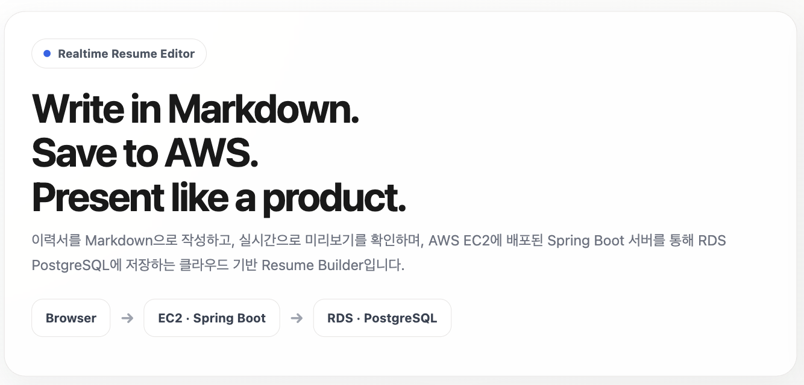

SOFTWARE ENGINEER · MINSEO JU
Building reliable software
and interactive experiences.
소프트웨어를 통해 아이디어를 실제 서비스로 구현하는 과정을 좋아합니다.
백엔드, 클라우드, 게임 및 인터랙티브 콘텐츠 개발 경험을 바탕으로
문제를 구조화하고 끝까지 구현하는 개발자를 목표로 하고 있습니다.
주민서Backend · Cloud · Software Development
01 — ABOUT
Ideas become useful
when they are shipped.
소프트웨어 전공을 바탕으로 Backend, Cloud, Software Development를 탐구하고 있습니다. 개인 프로젝트와 팀 프로젝트를 모두 경험하며, 요구사항을 구조화해 구현 가능한 시스템으로 바꾸는 일에 익숙해졌습니다.
아이디어에서 설계, 구현, 배포까지 이어지는 전체 흐름에 관심을 두고 있습니다. 작은 기능도 실제 사용 환경에서 신뢰성 있게 동작하도록 끝까지 다듬습니다.
02 — EDUCATION & CREDENTIALS
Learning in motion.
과학 기반의 문제 해결 경험을 바탕으로
소프트웨어 엔지니어링을 공부하고 있습니다.
EDUCATION
한국항공대학교Software Engineering · 재학 중
동덕여자대학교Chemistry
Langara CollegeChemistry
AWARD
한국항공대학교 게임톤 제4회 최우수상
03 — SELECTED WORK
Featured Projects
문제를 정의하고, 기술로 해결하며,
실제 환경에서 검증한 기록입니다.

01 / PERSONAL PROJECT
Resume Builder
Markdown Resume Management Service
Markdown으로 이력서를 작성하고 실시간으로 미리본 뒤, AWS 클라우드 환경에 저장할 수 있도록 구현한 개인 프로젝트.
- Personal Project
- Backend
- Cloud
TechKotlin · Spring Boot · Spring Data JPA · PostgreSQL · AWS EC2 · AWS RDS · VPC
View Case Study →02PAY
LENS
AI WAGE ANALYSIS ↗02 / INDUSTRY COLLABORATION
PayLens
AI-powered Wage Anomaly Detection Platform
외국인 근로자의 다양한 증빙자료를 OCR과 LLM 기반으로 분석하여 임금 이상 가능성을 탐지하고 PDF 리포트와 전문가 연계를 제공하는 산학협력 팀 프로젝트.
- Industry Collaboration
- Team Project
- AI Service
TechSpring Boot · React · PaddleOCR · Gemini · AWS · MySQL
View Case Study →
프로젝트를 설계하고 운영하기 위해
사용해 온 기술입니다.
Backend
- Kotlin
- Java
- Spring Boot
- Spring Data JPA
- REST API
Cloud / Infra
- AWS EC2
- AWS RDS
- AWS VPC
- AWS S3
- GitHub Actions
- Docker